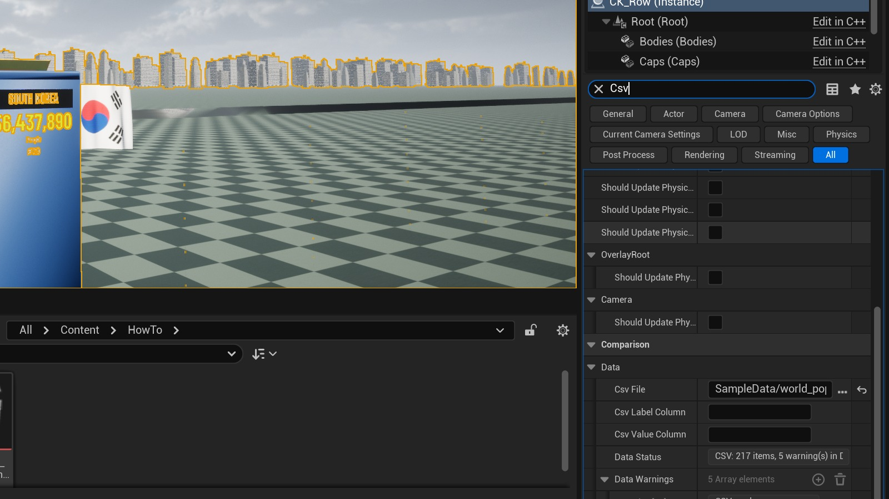

Data: the CSV guide
Give Csv File a table exactly as you downloaded it (World Bank, Our World in Data, Eurostat, a government portal, a spreadsheet export), or use the plain columns below. The kit reads the file itself; you rarely need to clean anything first.
Where the data comes from, in priority order: Data Table, then Csv File, then the inline Items list. All three are under Comparison | Data. A DataTable must use the row struct CKItem.

What the reader works out by itself
| It reads | Examples |
|---|---|
| Separator | comma, semicolon, tab, pipe, an Excel sep=; first line |
| Decimal mark | 1,234.56 and 1.234,56 and 1 234,56 |
| Units and symbols | 45%, $648.1, 8,849 m, 15.7 kg |
| Scale words | K, M, B, Mio, bn, crore and similar (1.5M, $648.1 billion, 15,7 Mio) |
| Negatives | (120) is -120 |
| Durations | 2:01:09 (h:mm:ss) is read as seconds |
| Text encoding | UTF-8, UTF-16, Windows-1252 |
| Layout | quoted cells, title rows and note rows above the header |
| Totals | rows such as Total are left out |
Headers are compared loosely: case, spaces and underscores do not matter.
The one ambiguous case. If every number in the file looks like 1,234, the comma could be a decimal mark or a thousands separator. A file separated by ; reads the comma as decimal; every other file reads it as thousands. If that guess is wrong, write the numbers with a clear decimal point.
Which columns it uses
- Label and value columns named
label/nameandvalueare used when present. - Otherwise the label is a column whose header ends in "name", or the text column with the most different entries. The value is the latest year with data (a table with one column per year, also
POP2020, POP2021, ...), or else the first numeric column that is not a rank, an id, a code or a year. - Wide tables (one column per year): each row keeps its latest year with a value.
- Long tables (one row per country and year): each country keeps its latest year with a value.
- To choose yourself, type a header name or a 1-based column number into Csv Label Column and Csv Value Column.
- Max Items keeps only the top N items by Rank Order (0 = all). Use it for long lists.
Data Warnings (Details, Comparison | Data) always starts with a CSV read line naming exactly what was taken, then lists every row that was skipped and why.
Left out, and listed in Data Warnings
- rows without a number, and placeholders such as
n/a,-,? - total rows (Total, and the same word in other languages)
- in a country table, the groups of countries (World, High income, Euro area, Sub-Saharan Africa)
- negative values, duplicate names and a
value_highbelow itsvalueare reported, not silently fixed
Places without a flag (for example Kosovo or the Channel Islands) stay in the list, without a flag. Rows without a name or a number are skipped, never the whole file.
Plain columns
| Column | Meaning |
|---|---|
label |
name on the card |
value |
the number (1,234.5 and 1234.5 both read) |
country |
ISO code (US, de) for the flag, optional |
image |
logo or picture instead of a flag: a texture asset path (/Game/Logos/T_Acme) or a PNG/JPG file path; a bare file name is read from the CSV's own folder, optional |
mesh |
this item's own static or skeletal mesh (height comparison, racers), optional |
animation |
loop for a skeletal mesh (idle, run), played on the comparison's time, optional |
color |
#RRGGBB to override the theme colour, optional |
note |
the first row's note becomes the source line |
value_high |
upper end of a range, shown as "100-150 m/s"; value still ranks |
value_text |
text shown instead of the number ("Unmeasurable"); value still ranks and sizes the item |
description |
one to three short lines for Museum and Lower Third labels; type \n to break a line |
category |
short pill on the label ("Megatall") |
confidence |
confirmed, estimated or speculative: adds "(Estimated)" and similar |
evidence |
how the value is known ("Radar gun"), shown with the tags |
era |
chapter of the item ("Ancient"): the first item of each new era shows an era tag |
year |
year of the item (negative = BC) |
grade |
bw or sepia: the picture fades to black and white or sepia while this item is presented |
reference |
true: a scale reference, not a ranked item (a person beside the buildings); shows "REF" instead of a rank |
hold |
extra seconds the video stays on this item; press Fit Sequence after a change |
movement |
how a static mesh moves in a Parade: walk, run, crawl, float, swim, fly or glide |
time_of_day |
sun hour for this item (see Looks) |
stat1, stat2 |
free stat lines on face cards and spec cards |
Equal values share a rank (#3, #3, #5). Imports of a DataTable use the same fields as the CSV columns.
Format-specific tables: Versus takes stat,a,b,suffix,lower_wins (see Versus); Bar Chart Race takes label,period,value[,country,image,color] or one column per period (see Bar Chart Race); Real-Time Race adds finish_time, stamina, exhausted_action (see Real-Time Race).
Country flags
Flags come from a country column (2-letter or 3-letter ISO codes, or country names), or from the labels themselves when they are country names.
- The flag table is DT_CK_Flags: 253 flags. Names match in any common spelling (for example "Korea, Rep." or "St. Lucia"); a formal name such as "Korea, Rep." shows the flag's display name on the card.
- To add your own language's names, open DT_CK_Flags and add them to a row's Names, separated by
|. The first name is the display name. - A label that is only a code (
DE) shows the country's name. - In a country table the region and income groups are dropped for you.
DataTable and Blueprint
- DataTable: create a DataTable with the row struct CKItem (versus: CKVersusStat, bar race: CKSeriesRow) and assign it to Data Table. It takes priority over a CSV.
- Blueprint: call Rebuild after changing a data source through Blueprint. The editor's Details panel rebuilds by itself when a setting changes. The Blueprint library also has Load Items From CSV, Load Items From CSV Columns, Get Items From Data Table, Validate Items, Sort Items and Format Value (see Blueprint API).
Relative paths and packaged games
A relative CSV path is looked up in your project folder first, then in the plugin folder, so SampleData/items_population.csv works as it is. CSV files are not cooked into a packaged game, so the rows the editor read are saved with the level: when the file is not there (a packaged game, another computer), the actor plays the saved rows and Data Warnings says CSV file not found here: playing the rows saved with the level. Save the level after you change the CSV. To load new numbers at runtime, use a DataTable or Load Items From CSV. Loose picture files are not cooked either: import them as textures and use their asset paths, or add their folder under Project Settings > Packaging > Additional Non-Asset Directories To Copy.
Every country in one video
The map L_CK_ColumnRace_AllCountries_ClassicCity reads SampleData/world_population_worldbank.csv, the World Bank file exactly as downloaded: title rows, one column per year, ISO3 codes and regional groups. Select its actor and look at Data Warnings to see what the reader did with it.